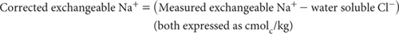

This method is identical to 15E1 except that a calculation, based on the amount of soluble Cl– present, is used to adjust for the apparent level of exchangeable Na+ present in the soil. This approximate correction for soluble Na+ is an alternative to chemical pre-treatment when EC (1:5, soil/water) exceeds 0.3 dS/m and NaCl is the dominant soluble salt.
Proceed as described in Method 15E1.
Convert mg Cl–/kg (from Method 5A1 or 5A2) to cmolcCl/kg by dividing by 354.5. On the assumption that all soluble Cl– is associated with Na+, calculate the corrected value as follows:

Report exchangeable Ca2+, Mg2+, and K+ (cmolc/kg) as determined from Method 15E1, and exchangeable Na+ as corrected above (cmolc/kg). Express results on an oven-dry basis. Use the air-dry moisture to oven-dry moisture ratio to convert to an oven-dry concentration. Refer to Method 2A1 for guidance with regard to this soil moisture calculation.
Report CECB and AEC as described for Method 15E1.